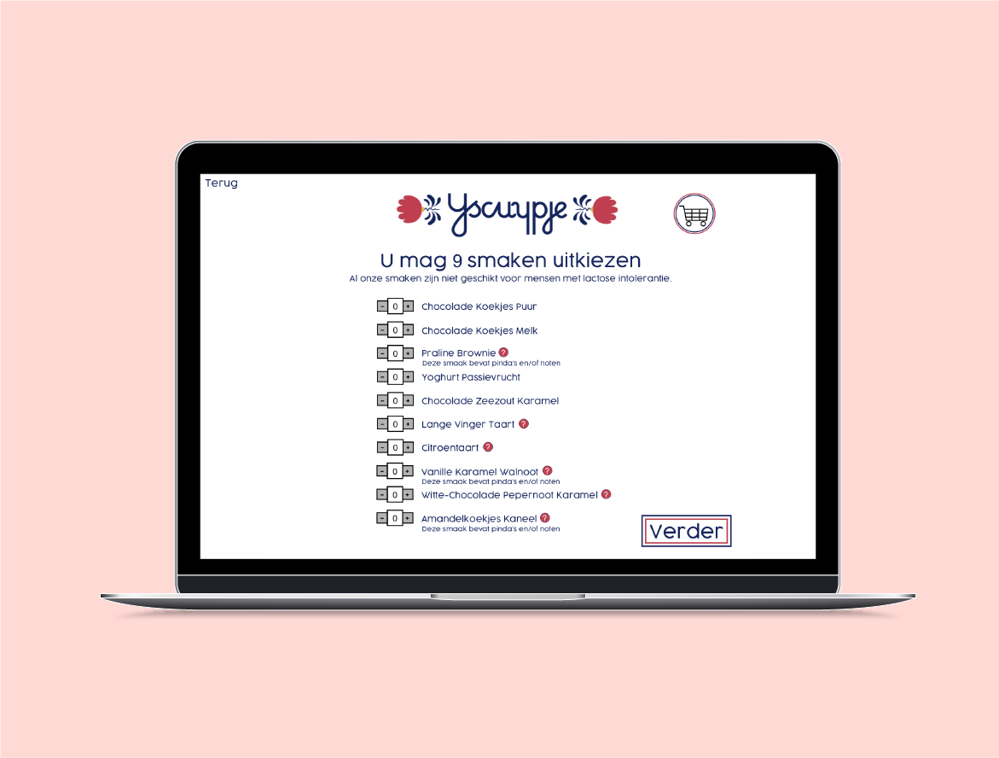
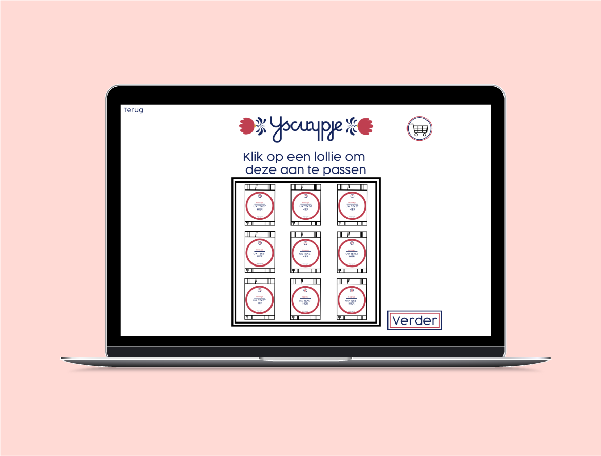

Situatie
Deze opdracht is gemaakt voor een vak genaamd Human Centred Design. Dit is een vak waarbij je juist bezig met onderzoeken hoe mensen hun digitale producten gebruiken en niet vormgeving op nummer 1 zet.
De opdrachtgever was Ijscuypje. Het was belangrijk dat de opdracht leidde tot een design waarin rekening is gehouden met de gebruiker en zijn/haar omgang met een laptop/desktop.
Taak
Ijscuypje wilde een website waar mensen grote hoeveelheden ijsbakjes op lollies konden bestellen voor kinderfeestjes of uitdelen op de basisschool. Er moet keuze zijn uit verschillende smaken en mensen moeten de verpakking ook zelf kunnen aanpassen. Aan mij de taak om dit design door een interactief proces te realiseren.
Ik wilde uitkomen op een product wat qua stijl goed bij Ijscuypje zelf past, en makkelijk te gebruiken is. Zelfs zodat ouders samen met hun kind het doel kunnen voltooien.
Activiteit
Ik heb geschetst op papier en in Illustrator. Eerst een versie gemaakt op papier, toen vervolgens iteratief deze dingen twee keer aangepast in Adobe Illustrator. Wat ervoor zorgt dat ik in totaal drie versies heb gemaakt. Ik heb vooral de typische HCI principes zoals 'keep users in control' en 'affordance'. Deze heb ik bij alle knoppen toegepast, dat is zeker terug te zien.
Resultaat
Ik denk dat ik in een goed iteratief proces tot het beste resultaat ben gekomen voor mijn ontwerp. Ik vind de website helder, goed uitgedacht en weet zeker dat het er ook uit ziet als een goed doordacht ontwerp.
Ik had misschien nog een visuele 'tijdlijn' toe kunnen voegen, een soort van 'u bent op deze stap van het ontwerpen/bestellen', maar het is niet alsof die erg gemist wordt.
De docent die de beoordeling deed en daardoor ook zich voordeed als de opdrachtgever vond het een erg duidelijke website. Wel was er misschien soms iets te veel 'clutter' op een pagina en had dit een klein beetje effect op de overzichtelijkheid.
Reflectie
Ik vind dit een goed voorbeeld van mijn design kunsten. Ook als er gekeken wordt naar de achtergrond van het product, hoe ik er over heb nagedacht etc.
Ik heb veel goede feedback gehad, ik heb dit vak ook met een mooie 7 afgerond.
Ik denk dat ik vaker eerst moet schetsen en dan pas het moet gaan digitaliseren, daar heb ik veel van geleerd.
Ik vind mijn sterke punt dat dit ontwerp heel erg 'clean' is. Vaak maak ik toch meer kleurrijke ontwerpen maar juist doordat ik vrij weinig kleuren echt heb gebruikt is dit een mooie website geworden.
Bekijk het hele ontwerp in dit PDF Bestand